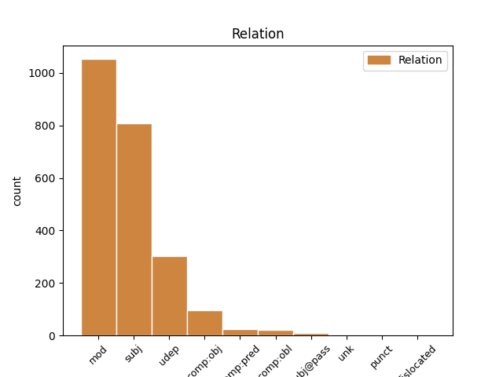
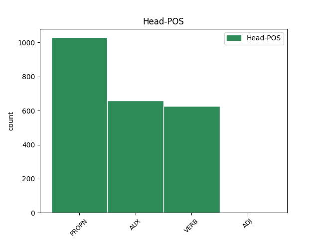
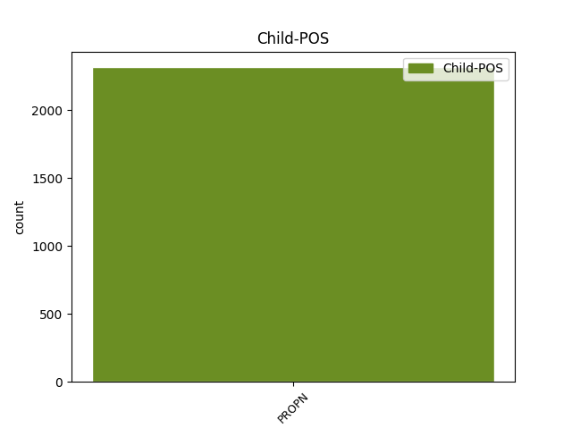

Distribution of features within this leaf



Agreement Rules sorted by frequency.
- When the dependent token is the modifer(mod) of the head token, and the head token is PROPN and the dependent token is PROPN.
1 चीनी _ _ _ _ 0 _ _ _
2 प्रधानमंत्री प्रधानमंत्री PROPN NNP Case=Nom|Gender=Masc|Number=Sing|Person=3 4 mod _ ChunkId=NP|ChunkType=child|Tam=0|Translit=pradhānamaṁtrī|Vib=0
3 वेन _ _ _ _ 0 _ _ _
4 जियाबाओ जियाबाओ PROPN NNP Case=Acc|Gender=Masc|Number=Sing|Person=3 0 _ _ _
5 की _ _ _ _ 0 _ _ _
6 भारत _ _ _ _ 0 _ _ _
7 यात्रा _ _ _ _ 0 _ _ _
8 से _ _ _ _ 0 _ _ _
9 पहले _ _ _ _ 0 _ _ _
10 निर्वासित _ _ _ _ 0 _ _ _
11 तिब्बती _ _ _ _ 0 _ _ _
12 आध्यात्मिक _ _ _ _ 0 _ _ _
13 नेता _ _ _ _ 0 _ _ _
14 दलाई _ _ _ _ 0 _ _ _
15 लामा _ _ _ _ 0 _ _ _
16 ने _ _ _ _ 0 _ _ _
17 कहा _ _ _ _ 0 _ _ _
18 है _ _ _ _ 0 _ _ _
19 कि _ _ _ _ 0 _ _ _
20 चीनी _ _ _ _ 0 _ _ _
21 और _ _ _ _ 0 _ _ _
22 तिब्बती _ _ _ _ 0 _ _ _
23 एक _ _ _ _ 0 _ _ _
24 - _ _ _ _ 0 _ _ _
25 दूसरे _ _ _ _ 0 _ _ _
26 की _ _ _ _ 0 _ _ _
27 सांस्कृतिक _ _ _ _ 0 _ _ _
28 विशिष्टता _ _ _ _ 0 _ _ _
29 का _ _ _ _ 0 _ _ _
30 आदर _ _ _ _ 0 _ _ _
31 करते _ _ _ _ 0 _ _ _
32 हैं _ _ _ _ 0 _ _ _
33 । _ _ _ _ 0 _ _ _
1 उन्होंने _ _ _ _ 0 _ _ _
2 कहा _ _ _ _ 0 _ _ _
3 कि _ _ _ _ 0 _ _ _
4 चीन चीन PROPN NNP Case=Nom|Gender=Masc|Number=Sing|Person=3 18 subj _ ChunkId=NP2|ChunkType=head|Tam=0|Translit=cīna|Vib=0
5 तिब्बत _ _ _ _ 0 _ _ _
6 को _ _ _ _ 0 _ _ _
7 व्यापक _ _ _ _ 0 _ _ _
8 स्वायत्तता _ _ _ _ 0 _ _ _
9 देकर _ _ _ _ 0 _ _ _
10 इस _ _ _ _ 0 _ _ _
11 समस्या _ _ _ _ 0 _ _ _
12 के _ _ _ _ 0 _ _ _
13 समाधान _ _ _ _ 0 _ _ _
14 का _ _ _ _ 0 _ _ _
15 रास्ता _ _ _ _ 0 _ _ _
16 साफ _ _ _ _ 0 _ _ _
17 कर _ _ _ _ 0 _ _ _
18 सकता सक AUX VAUX Aspect=Imp|Gender=Masc|Number=Sing|VerbForm=Part 0 _ _ _
19 है _ _ _ _ 0 _ _ _
20 । _ _ _ _ 0 _ _ _
1 उन्होंने _ _ _ _ 0 _ _ _
2 कहा _ _ _ _ 0 _ _ _
3 कि _ _ _ _ 0 _ _ _
4 कांग्रेसियों _ _ _ _ 0 _ _ _
5 की _ _ _ _ 0 _ _ _
6 मदद _ _ _ _ 0 _ _ _
7 से _ _ _ _ 0 _ _ _
8 यह _ _ _ _ 0 _ _ _
9 मार्च मार्च PROPN NNP Case=Nom|Gender=Masc|Number=Sing|Person=3 12 subj _ ChunkId=NP4|ChunkType=head|Tam=0|Translit=mārca|Vib=0
10 काफी _ _ _ _ 0 _ _ _
11 सफल _ _ _ _ 0 _ _ _
12 रहा रह VERB VM Aspect=Perf|Gender=Masc|Number=Sing|VerbForm=Part|Voice=Act 0 _ _ _
13 । _ _ _ _ 0 _ _ _
1 इनोकी _ _ _ _ 0 _ _ _
2 ने _ _ _ _ 0 _ _ _
3 कहा _ _ _ _ 0 _ _ _
4 कि _ _ _ _ 0 _ _ _
5 दोनों _ _ _ _ 0 _ _ _
6 देशों _ _ _ _ 0 _ _ _
7 के _ _ _ _ 0 _ _ _
8 बीच _ _ _ _ 0 _ _ _
9 उच्च _ _ _ _ 0 _ _ _
10 स्तरीय _ _ _ _ 0 _ _ _
11 बातचीत _ _ _ _ 0 _ _ _
12 के _ _ _ _ 0 _ _ _
13 तहत _ _ _ _ 0 _ _ _
14 जापान _ _ _ _ 0 _ _ _
15 के _ _ _ _ 0 _ _ _
16 तीन _ _ _ _ 0 _ _ _
17 मंत्री _ _ _ _ 0 _ _ _
18 द्विपक्षीय _ _ _ _ 0 _ _ _
19 संबंधों _ _ _ _ 0 _ _ _
20 को _ _ _ _ 0 _ _ _
21 बढ़ावा _ _ _ _ 0 _ _ _
22 देने _ _ _ _ 0 _ _ _
23 के _ _ _ _ 0 _ _ _
24 उद्देश्य _ _ _ _ 0 _ _ _
25 से _ _ _ _ 0 _ _ _
26 इस _ _ _ _ 0 _ _ _
27 सप्ताह _ _ _ _ 0 _ _ _
28 भारत भारत PROPN NNP Case=Nom|Gender=Masc|Number=Sing|Person=3 30 udep _ ChunkId=NP10|ChunkType=head|Tam=0|Translit=bhārata|Vib=0
29 आ _ _ _ _ 0 _ _ _
30 रहे रह AUX VAUX Aspect=Perf|Gender=Masc|Number=Plur|VerbForm=Part 0 _ _ _
31 हैं _ _ _ _ 0 _ _ _
32 । _ _ _ _ 0 _ _ _
1 इस _ _ _ _ 0 _ _ _
2 दौरान _ _ _ _ 0 _ _ _
3 वे _ _ _ _ 0 _ _ _
4 अफ्रीका अफ्रीका PROPN NNP Case=Nom|Gender=Masc|Number=Sing|Person=3 11 udep _ ChunkId=NP3|ChunkType=head|SpaceAfter=No|Tam=0|Translit=aphrīkā|Vib=0
5 , _ _ _ _ 0 _ _ _
6 मध्य _ _ _ _ 0 _ _ _
7 एशिया _ _ _ _ 0 _ _ _
8 और _ _ _ _ 0 _ _ _
9 मध्य _ _ _ _ 0 _ _ _
10 पूर्व _ _ _ _ 0 _ _ _
11 गए जा VERB VM Aspect=Perf|Gender=Masc|Number=Sing|Person=3|Polite=Form|VerbForm=Part|Voice=Act 0 _ _ _
12 । _ _ _ _ 0 _ _ _
1 एअरपोर्ट _ _ _ _ 0 _ _ _
2 सेंटॉर सेंटॉर PROPN NNP Case=Nom|Gender=Masc|Number=Sing|Person=3 10 comp:obj _ ChunkId=NP|ChunkType=head|Tam=0|Translit=seṁṭôra|Vib=0
3 अप्रैल _ _ _ _ 0 _ _ _
4 2002 _ _ _ _ 0 _ _ _
5 में _ _ _ _ 0 _ _ _
6 83 _ _ _ _ 0 _ _ _
7 करोड़ _ _ _ _ 0 _ _ _
8 रुपये _ _ _ _ 0 _ _ _
9 में _ _ _ _ 0 _ _ _
10 बेच बेच VERB VM Gender=Masc|Number=Sing|Voice=Pass 0 _ _ _
11 दिया _ _ _ _ 0 _ _ _
12 गया _ _ _ _ 0 _ _ _
13 । _ _ _ _ 0 _ _ _
1 तमाम _ _ _ _ 0 _ _ _
2 आरोपों _ _ _ _ 0 _ _ _
3 के _ _ _ _ 0 _ _ _
4 बाद _ _ _ _ 0 _ _ _
5 भी _ _ _ _ 0 _ _ _
6 उन्हें _ _ _ _ 0 _ _ _
7 मुख्यमंत्री मुख्यमंत्री PROPN NNP Case=Nom|Gender=Masc|Number=Sing|Person=3 8 mod _ ChunkId=NP3|ChunkType=head|Tam=0|Translit=mukhyamaṁtrī|Vib=0
8 बनाया बना VERB VM Aspect=Perf|Gender=Masc|Number=Sing|Person=3|VerbForm=Part|Voice=Pass 0 _ _ _
9 गया _ _ _ _ 0 _ _ _
10 है _ _ _ _ 0 _ _ _
11 । _ _ _ _ 0 _ _ _
1 जैन जैन PROPN NNP Case=Nom|Gender=Masc|Number=Sing|Person=3 9 comp:obl _ ChunkId=NP|ChunkType=head|Tam=0|Translit=jaina|Vib=0
2 भी _ _ _ _ 0 _ _ _
3 इस _ _ _ _ 0 _ _ _
4 बारे _ _ _ _ 0 _ _ _
5 में _ _ _ _ 0 _ _ _
6 भट्ट _ _ _ _ 0 _ _ _
7 से _ _ _ _ 0 _ _ _
8 सलाह _ _ _ _ 0 _ _ _
9 लेते ले VERB VM Aspect=Imp|Gender=Masc|Number=Sing|Person=3|Polite=Form|VerbForm=Part|Voice=Act 0 _ _ _
10 हैं _ _ _ _ 0 _ _ _
11 । _ _ _ _ 0 _ _ _
1 गौरतलब _ _ _ _ 0 _ _ _
2 है _ _ _ _ 0 _ _ _
3 कि _ _ _ _ 0 _ _ _
4 परिषद _ _ _ _ 0 _ _ _
5 का _ _ _ _ 0 _ _ _
6 अध्यक्ष _ _ _ _ 0 _ _ _
7 प्रधानमंत्री प्रधानमंत्री PROPN NNP Case=Nom|Gender=Masc|Number=Sing|Person=3 8 comp:pred _ ChunkId=NP3|ChunkType=head|Tam=0|Translit=pradhānamaṁtrī|Vib=0
8 होता हो VERB VM Aspect=Imp|Gender=Masc|Number=Sing|Person=3|VerbForm=Part|Voice=Act 0 _ _ _
9 है _ _ _ _ 0 _ _ _
10 । _ _ _ _ 0 _ _ _
1 मौके _ _ _ _ 0 _ _ _
2 पर _ _ _ _ 0 _ _ _
3 पहुंचे _ _ _ _ 0 _ _ _
4 एसडीओ _ _ _ _ 0 _ _ _
5 महेंद्र _ _ _ _ 0 _ _ _
6 सिंह सिंह PROPN NNP Case=Acc|Gender=Masc|Number=Sing|Person=3 19 subj@pass _ ChunkId=NP2|ChunkType=head|Tam=0|Translit=siṁha|Vib=0
7 व _ _ _ _ 0 _ _ _
8 अन्य _ _ _ _ 0 _ _ _
9 लोगों _ _ _ _ 0 _ _ _
10 ने _ _ _ _ 0 _ _ _
11 बीच _ _ _ _ 0 _ _ _
12 - _ _ _ _ 0 _ _ _
13 बचाव _ _ _ _ 0 _ _ _
14 करके _ _ _ _ 0 _ _ _
15 मामले _ _ _ _ 0 _ _ _
16 को _ _ _ _ 0 _ _ _
17 शांत _ _ _ _ 0 _ _ _
18 कराया _ _ _ _ 0 _ _ _
19 गया जा AUX VAUX Aspect=Perf|Gender=Masc|Number=Sing|VerbForm=Part 0 _ _ _
20 । _ _ _ _ 0 _ _ _
1 इस _ _ _ _ 0 _ _ _
2 तीव्र _ _ _ _ 0 _ _ _
3 भूकंप _ _ _ _ 0 _ _ _
4 का _ _ _ _ 0 _ _ _
5 केंद्र _ _ _ _ 0 _ _ _
6 मिदनापुर मिदनापुर PROPN NNP Case=Nom|Gender=Masc|Number=Sing|Person=3 7 comp:pred _ ChunkId=NP3|ChunkType=head|Tam=0|Translit=midanāpura|Vib=0
7 था था AUX VM Gender=Masc|Mood=Ind|Number=Sing|Tense=Past|VerbForm=Fin|Voice=Act 0 _ _ _
8 । _ _ _ _ 0 _ _ _
1 पहला _ _ _ _ 0 _ _ _
2 ग्लोबीजेन _ _ _ _ 0 _ _ _
3 यानि _ _ _ _ 0 _ _ _
4 सशक्त _ _ _ _ 0 _ _ _
5 अंतर्राष्ट्रीय _ _ _ _ 0 _ _ _
6 विचार _ _ _ _ 0 _ _ _
7 - _ _ _ _ 0 _ _ _
8 व्यवहार _ _ _ _ 0 _ _ _
9 वाले _ _ _ _ 0 _ _ _
10 भारतीयों _ _ _ _ 0 _ _ _
11 , _ _ _ _ 0 _ _ _
12 दूसरा दूसरा ADJ QO Case=Nom|Gender=Masc|Number=Sing|NumType=Ord 0 _ _ _
13 ग्लोबेट्यूड्स ग्लोबेट्यूड PROPN NNP Case=Nom|Gender=Masc|Number=Plur|Person=3 12 mod _ ChunkId=NP6|ChunkType=head|Tam=0|Translit=globeṭyūḍsa|Vib=0
14 यानि _ _ _ _ 0 _ _ _
15 सशक्त _ _ _ _ 0 _ _ _
16 अंतर्राष्ट्रीय _ _ _ _ 0 _ _ _
17 विचार _ _ _ _ 0 _ _ _
18 और _ _ _ _ 0 _ _ _
19 कमजोर _ _ _ _ 0 _ _ _
20 व्यवहार _ _ _ _ 0 _ _ _
21 वाले _ _ _ _ 0 _ _ _
22 भारतीयों _ _ _ _ 0 _ _ _
23 , _ _ _ _ 0 _ _ _
24 तीसरे _ _ _ _ 0 _ _ _
25 वर्ग _ _ _ _ 0 _ _ _
26 में _ _ _ _ 0 _ _ _
27 ग्लोबेहैव _ _ _ _ 0 _ _ _
28 यानी _ _ _ _ 0 _ _ _
29 कमजोर _ _ _ _ 0 _ _ _
30 अंतर्राष्ट्रीय _ _ _ _ 0 _ _ _
31 विचार _ _ _ _ 0 _ _ _
32 लेकिन _ _ _ _ 0 _ _ _
33 मजबूत _ _ _ _ 0 _ _ _
34 व्यवहार _ _ _ _ 0 _ _ _
35 वाले _ _ _ _ 0 _ _ _
36 भारतीयों _ _ _ _ 0 _ _ _
37 और _ _ _ _ 0 _ _ _
38 चौथे _ _ _ _ 0 _ _ _
39 वर्ग _ _ _ _ 0 _ _ _
40 में _ _ _ _ 0 _ _ _
41 लोकाजेन _ _ _ _ 0 _ _ _
42 यानी _ _ _ _ 0 _ _ _
43 कमजोर _ _ _ _ 0 _ _ _
44 अंतर्राष्ट्रीय _ _ _ _ 0 _ _ _
45 आचार _ _ _ _ 0 _ _ _
46 - _ _ _ _ 0 _ _ _
47 विचार _ _ _ _ 0 _ _ _
48 वाले _ _ _ _ 0 _ _ _
49 भारतीयों _ _ _ _ 0 _ _ _
50 को _ _ _ _ 0 _ _ _
51 रखा _ _ _ _ 0 _ _ _
52 गया _ _ _ _ 0 _ _ _
53 है _ _ _ _ 0 _ _ _
54 । _ _ _ _ 0 _ _ _
1 क्या _ _ _ _ 0 _ _ _
2 पाकिस्तान _ _ _ _ 0 _ _ _
3 के _ _ _ _ 0 _ _ _
4 प्रधानमंत्री प्रधानमंत्री PROPN NNP Case=Nom|Gender=Masc|Number=Sing|Person=3 8 unk _ ChunkId=NP2|ChunkType=head|Tam=0|Translit=pradhānamaṁtrī|Vib=0
5 मीर _ _ _ _ 0 _ _ _
6 जफरुल्ला _ _ _ _ 0 _ _ _
7 खान _ _ _ _ 0 _ _ _
8 जमाली जमाली PROPN NNP Case=Acc|Gender=Masc|Number=Sing|Person=3 0 _ _ _
9 के _ _ _ _ 0 _ _ _
10 सत्ता _ _ _ _ 0 _ _ _
11 में _ _ _ _ 0 _ _ _
12 गिने _ _ _ _ 0 _ _ _
13 - _ _ _ _ 0 _ _ _
14 चुने _ _ _ _ 0 _ _ _
15 दिन _ _ _ _ 0 _ _ _
16 रह _ _ _ _ 0 _ _ _
17 गए _ _ _ _ 0 _ _ _
18 हैं _ _ _ _ 0 _ _ _
19 । _ _ _ _ 0 _ _ _
1 नेशनल _ _ _ _ 0 _ _ _
2 इंस्टीट्यूट इंस्टीट्यूट PROPN NNPC Case=Nom|Gender=Masc|Number=Sing|Person=3 4 punct _ ChunkId=FRAGP|ChunkType=child|Tam=0|Translit=iṁsṭīṭyūṭa|Vib=0
3 ऑफ _ _ _ _ 0 _ _ _
4 न्यूट्रीशन न्यूट्रीशन PROPN NNPC Case=Nom|Gender=Masc|Number=Sing|Person=3 0 _ _ _
5 ( _ _ _ _ 0 _ _ _
6 एनआईएन _ _ _ _ 0 _ _ _
7 ) _ _ _ _ 0 _ _ _
8 हैदराबाद _ _ _ _ 0 _ _ _
9 के _ _ _ _ 0 _ _ _
10 पूर्व _ _ _ _ 0 _ _ _
11 निदेशक _ _ _ _ 0 _ _ _
12 डा. _ _ _ _ 0 _ _ _
13 मोहन _ _ _ _ 0 _ _ _
14 राव _ _ _ _ 0 _ _ _
15 ने _ _ _ _ 0 _ _ _
16 बताया _ _ _ _ 0 _ _ _
17 कि _ _ _ _ 0 _ _ _
18 कुपोषण _ _ _ _ 0 _ _ _
19 और _ _ _ _ 0 _ _ _
20 अति _ _ _ _ 0 _ _ _
21 पोषण _ _ _ _ 0 _ _ _
22 दोनों _ _ _ _ 0 _ _ _
23 समस्याओं _ _ _ _ 0 _ _ _
24 से _ _ _ _ 0 _ _ _
25 निपटने _ _ _ _ 0 _ _ _
26 की _ _ _ _ 0 _ _ _
27 गंभीर _ _ _ _ 0 _ _ _
28 चुनौती _ _ _ _ 0 _ _ _
29 खड़ी _ _ _ _ 0 _ _ _
30 हो _ _ _ _ 0 _ _ _
31 गई _ _ _ _ 0 _ _ _
32 है _ _ _ _ 0 _ _ _
33 । _ _ _ _ 0 _ _ _
1 पुलिस _ _ _ _ 0 _ _ _
2 ने _ _ _ _ 0 _ _ _
3 इस _ _ _ _ 0 _ _ _
4 मामले _ _ _ _ 0 _ _ _
5 में _ _ _ _ 0 _ _ _
6 पहली _ _ _ _ 0 _ _ _
7 बार _ _ _ _ 0 _ _ _
8 सूचना _ _ _ _ 0 _ _ _
9 प्रौद्योगिकी प्रौद्योगिकी PROPN NNP Case=Nom|Gender=Fem|Number=Sing|Person=3 11 dislocated _ ChunkId=NP4|ChunkType=head|Tam=0|Translit=praudyogikī|Vib=0
10 ( _ _ _ _ 0 _ _ _
11 आईटी आईटी PROPN NNP Case=Nom|Gender=Fem|Number=Sing|Person=3 0 _ _ _
12 ) _ _ _ _ 0 _ _ _
13 कानून _ _ _ _ 0 _ _ _
14 के _ _ _ _ 0 _ _ _
15 प्रावधानों _ _ _ _ 0 _ _ _
16 का _ _ _ _ 0 _ _ _
17 इस्तेमाल _ _ _ _ 0 _ _ _
18 किया _ _ _ _ 0 _ _ _
19 है _ _ _ _ 0 _ _ _
20 । _ _ _ _ 0 _ _ _
Disagree Examples:
1 शौकत _ _ _ _ 0 _ _ _
2 महल _ _ _ _ 0 _ _ _
3 के _ _ _ _ 0 _ _ _
4 सामने _ _ _ _ 0 _ _ _
5 बड़ी _ _ _ _ 0 _ _ _
6 झील _ _ _ _ 0 _ _ _
7 के _ _ _ _ 0 _ _ _
8 किनारे _ _ _ _ 0 _ _ _
9 स्थित _ _ _ _ 0 _ _ _
10 वास्तुकला _ _ _ _ 0 _ _ _
11 का _ _ _ _ 0 _ _ _
12 यह _ _ _ _ 0 _ _ _
13 खूबसूरत _ _ _ _ 0 _ _ _
14 नमूना _ _ _ _ 0 _ _ _
15 कुदसिया _ _ _ _ 0 _ _ _
16 बेगम _ _ _ _ 0 _ _ _
17 के _ _ _ _ 0 _ _ _
18 काल _ _ _ _ 0 _ _ _
19 का _ _ _ _ 0 _ _ _
20 है _ _ _ _ 0 _ _ _
21 जिन्हें _ _ _ _ 0 _ _ _
22 गोहर _ _ _ _ 0 _ _ _
23 बेगम बेगम PROPN NNP Case=Nom|Gender=Fem|Number=Sing|Person=3 25 mod _ ChunkId=NP9|ChunkType=head|Tam=0|Translit=begama|Vib=0
24 भी _ _ _ _ 0 _ _ _
25 कहा कह VERB VM Aspect=Perf|Gender=Masc|Number=Sing|VerbForm=Part|Voice=Act 0 _ _ _
26 जाता _ _ _ _ 0 _ _ _
27 था _ _ _ _ 0 _ _ _
28 । _ _ _ _ 0 _ _ _
1 भोपाल _ _ _ _ 0 _ _ _
2 , _ _ _ _ 0 _ _ _
3 दिल्ली दिल्ली PROPN NNP Case=Nom|Gender=Fem|Number=Sing|Person=3 5 mod _ ChunkId=NP2|ChunkType=child|Tam=0|Translit=dillī|Vib=0
4 - _ _ _ _ 0 _ _ _
5 मद्रास मद्रास PROPN NNP Case=Nom|Gender=Masc|Number=Sing|Person=3 0 _ _ _
6 मेन _ _ _ _ 0 _ _ _
7 लाइन _ _ _ _ 0 _ _ _
8 पर _ _ _ _ 0 _ _ _
9 है _ _ _ _ 0 _ _ _
10 । _ _ _ _ 0 _ _ _
1 हाथी _ _ _ _ 0 _ _ _
2 महल _ _ _ _ 0 _ _ _
3 , _ _ _ _ 0 _ _ _
4 दरिया _ _ _ _ 0 _ _ _
5 खान _ _ _ _ 0 _ _ _
6 की _ _ _ _ 0 _ _ _
7 मजार _ _ _ _ 0 _ _ _
8 , _ _ _ _ 0 _ _ _
9 दाई _ _ _ _ 0 _ _ _
10 का _ _ _ _ 0 _ _ _
11 महल _ _ _ _ 0 _ _ _
12 , _ _ _ _ 0 _ _ _
13 दाई _ _ _ _ 0 _ _ _
14 की _ _ _ _ 0 _ _ _
15 छोटी _ _ _ _ 0 _ _ _
16 बहन बहन PROPN NNP Case=Acc|Gender=Fem|Number=Sing|Person=3 18 mod _ ChunkId=NP4|ChunkType=child|Tam=0|Translit=bahana|Vib=0
17 का _ _ _ _ 0 _ _ _
18 महल महल PROPN NNP Case=Nom|Gender=Masc|Number=Sing|Person=3 0 _ _ _
19 , _ _ _ _ 0 _ _ _
20 मलिक _ _ _ _ 0 _ _ _
21 मघत _ _ _ _ 0 _ _ _
22 की _ _ _ _ 0 _ _ _
23 मस्जिद _ _ _ _ 0 _ _ _
24 और _ _ _ _ 0 _ _ _
25 जाली _ _ _ _ 0 _ _ _
26 महल _ _ _ _ 0 _ _ _
27 भी _ _ _ _ 0 _ _ _
28 दर्शनीय _ _ _ _ 0 _ _ _
29 हैं _ _ _ _ 0 _ _ _
30 । _ _ _ _ 0 _ _ _
1 ओरलैंडो _ _ _ _ 0 _ _ _
2 जाने _ _ _ _ 0 _ _ _
3 के _ _ _ _ 0 _ _ _
4 लिए _ _ _ _ 0 _ _ _
5 जुलाई जुलाई PROPN NNP Case=Nom|Gender=Fem|Number=Sing|Person=3 7 mod _ ChunkId=NP2|ChunkType=child|Tam=0|Translit=julāī|Vib=0
6 - _ _ _ _ 0 _ _ _
7 अगस्त अगस्त PROPN NNP Case=Acc|Gender=Masc|Number=Sing|Person=3 0 _ _ _
8 का _ _ _ _ 0 _ _ _
9 मौसम _ _ _ _ 0 _ _ _
10 सबसे _ _ _ _ 0 _ _ _
11 अच्छा _ _ _ _ 0 _ _ _
12 है _ _ _ _ 0 _ _ _
13 । _ _ _ _ 0 _ _ _
1 इसके _ _ _ _ 0 _ _ _
2 अलावा _ _ _ _ 0 _ _ _
3 आप _ _ _ _ 0 _ _ _
4 कटनी कटनी PROPN NNP Case=Acc|Gender=Fem|Number=Sing|Person=3 24 udep _ ChunkId=NP3|ChunkType=head|SpaceAfter=No|Tam=0|Translit=kaṭanī|Vib=0
5 , _ _ _ _ 0 _ _ _
6 सतना _ _ _ _ 0 _ _ _
7 , _ _ _ _ 0 _ _ _
8 जबलपुर _ _ _ _ 0 _ _ _
9 या _ _ _ _ 0 _ _ _
10 देश _ _ _ _ 0 _ _ _
11 के _ _ _ _ 0 _ _ _
12 किसी _ _ _ _ 0 _ _ _
13 भी _ _ _ _ 0 _ _ _
14 हिस्से _ _ _ _ 0 _ _ _
15 से _ _ _ _ 0 _ _ _
16 यहाँ _ _ _ _ 0 _ _ _
17 के _ _ _ _ 0 _ _ _
18 लिए _ _ _ _ 0 _ _ _
19 रेल _ _ _ _ 0 _ _ _
20 या _ _ _ _ 0 _ _ _
21 बस _ _ _ _ 0 _ _ _
22 सुविधा _ _ _ _ 0 _ _ _
23 ले _ _ _ _ 0 _ _ _
24 सकते सक AUX VAUX Aspect=Imp|Gender=Masc|Number=Sing|Person=2|Polite=Form|VerbForm=Part 0 _ _ _
25 हैं _ _ _ _ 0 _ _ _
26 . _ _ _ _ 0 _ _ _